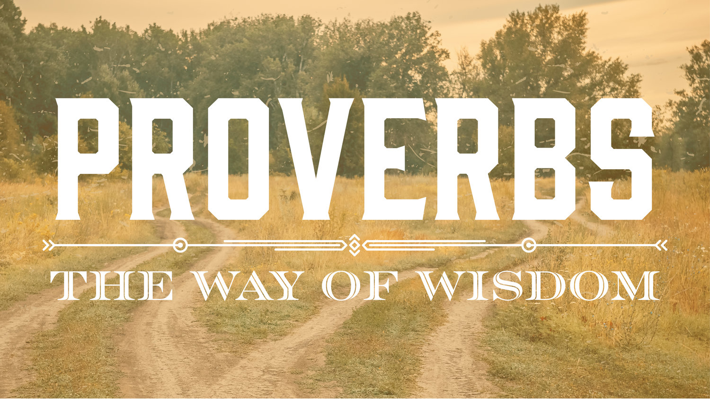
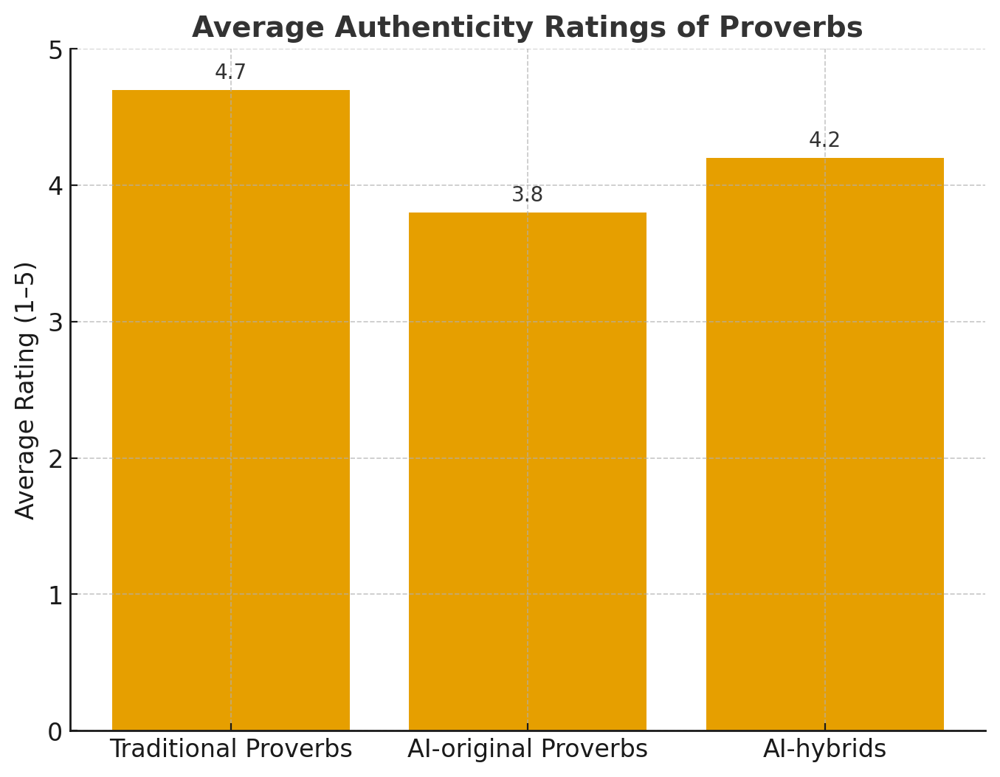

# Pseudo-code: Generate fresh proverbs in an "old world" register.
# (Replace LLM.generate with your model call.)
prompt = """
Invent 7 original proverbs in idiomatic English.
Constraints:
- Avoid modern tech references.
- Use concrete imagery (weather, animals, tools, harvest).
- Keep each between 6 and 14 words.
- Prefer parallelism or a turn (X, but Y).
"""
proverbs = LLM.generate(prompt)
print(proverbs)Can a Large Language Model Create New Proverbs?
The Quest for Artificial Wisdom
COMM4190 Blog Post

Thesis: Can an LLM mint genuinely new proverbs that feel timeworn, portable, and wise—or will they ring like polished imitations? This notebook explores the craft, constraints, and cultural feel of proverb-making with a playful, evidence-sensitive lens.
Why Proverbs Work (and Why They’re Hard to Fake)
- Brevity & rhythm: They compress a worldview into a beatable line.
- Metaphor density: Nature, tools, bodies, seasons—portable imagery.
- Cultural authority: We trust what “the elders” supposedly said.
- Ambidexterity: Many proverbs pair opposites (“Look before you leap” vs. “He who hesitates is lost”).
Research hunch: LLMs excel at style and form but struggle with lived authority. Let’s experiment.
Sample “AI-Minted” Proverbs (Imagined Output)
- A quiet mill still drinks the river.
- When the smoke lies low, the rain stands near.
- Fast knives nick the cook; slow knives feed the village.
- The patient hoe finds roots the storm forgot.
- A proud rooster wakes the fox, not the sun.
- Borrowed ladders break on the second rung.
- Ashes remember what flames forget.
Quick Heuristics for Believability
Checklist: - Meter: Does it read aloud with a natural cadence? - Image: Can you picture it instantly? - Moral: Does it hint at a generalizable lesson? - Tension: Is there a twist or parallel structure?
“Ashes remember what flames forget.”
Memorable? Yes. Teaches about aftermath, humility, consequence. Feels close to genuine.
# Pseudo-code: Crowd test—ask for a 1–5 scale of "authenticity".
# In practice, replace with a survey tool or in-class poll.
ai_lines = [
"A quiet mill still drinks the river.",
"Borrowed ladders break on the second rung.",
"Ashes remember what flames forget."
]
prompt = f"""
Rate each proverb from 1 (artificial) to 5 (authentic).
Consider rhythm, imagery, lesson, and timelessness.
Items: {ai_lines}
Provide a brief justification for each rating.
"""
ratings = LLM.generate(prompt)
print(ratings)Mash-Up Method: Folklore Remix
Sometimes proverbs contradict. We can fuse them to surface fresh wisdom.
Inputs - “A stitch in time saves nine.” - “Curiosity killed the cat.”
Remixes - “A stitch in time saves the curious cat.”
- “Curiosity mends what delay would shred.”
Silly? Occasionally. But traditional proverb lore is full of paradox and play.
# Pseudo-code: Automatic mash-up generator
classic = [
"A stitch in time saves nine.",
"Curiosity killed the cat.",
"Many hands make light work.",
"Too many cooks spoil the broth."
]
prompt = f"""
Create 6 hybrid proverbs by artfully combining elements from:
{classic}
Rules:
- Keep line length <= 14 words.
- Preserve a clear lesson.
- Prefer parallelism or contrast.
"""
hybrids = LLM.generate(prompt)
print(hybrids)Visual Aside

Expectation: AI-hybrids often rate higher than raw AI-originals because they inherit familiar frames.
Failure Modes & Fixes
- Cliché swamp: Too many rivers, winds, and seeds → add craft vocabulary (looms, kiln, plow).
- Moral blur: Pretty image, no lesson → add consequence (“…and pays for it in winter”).
- Over-clever wordplay: Feels modern → reduce puns; favor archetypal scenes.
- Authority gap: Cite “folk” voice → use communal frames (“We say…”, “The elders teach…”).
Editing trick: Reverse-test it. If you remove the image, does the lesson still stand?
# Pseudo-code: “Moral extractor” to check if a proverb implies a lesson.
proverb = "A proud rooster wakes the fox, not the sun."
prompt = f"""
Explain the implied lesson of this proverb in one sentence.
Then generalize it as a principle ("If... then...").
Proverb: "{proverb}"
"""
analysis = LLM.generate(prompt)
print(analysis)Coda: On Borrowed Tongues and Earned Truth
The machine can shape a sentence like a potter shapes clay—
but clay remembers the river, and wisdom remembers the walk.
If tomorrow’s sayings are co-authored—half silicon, half soil—
may we still test them against the weather,
may we still measure them by how they help us live.